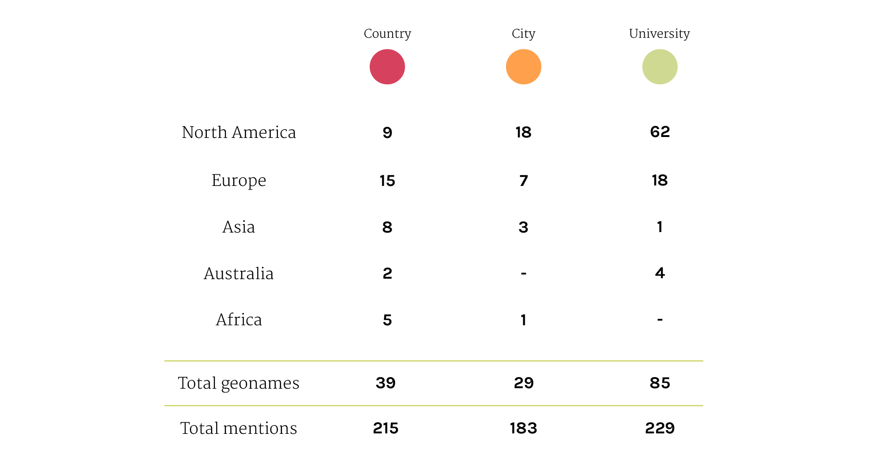

Findings
The geo entities that are mentioned in the web pages are spread all over the world and not just in Europe and USA as you might think. In particular, we can point out the presence of many universities that are those who care more about the subject because of safety reasons and they are also those who are studying it .
Most of the articles about this topic are written by academics of american and english universities indeed.
Another thing to note is the presence of countries like Sweden, that is very relevant because of Pirate Bay and the whole question about it, or the area of California where there are the locations of the majors.
Looking at the amount of geonames for each category it’s evident that university entities are significantly more than the geonames of the other 2 categories.
However considering the amount of mentions the gap between university geonames and country geonames is greatly reduced.
This reflects the fact that mentioned universities are numerous but each one of them is nominated only a few times; mentioned countries are less than universities but they are nominated many times.
This happens because universities are small entities scattered around the world and their voice can be hardly heard in the debate; therefore the authors of the articles prefer to talk referring to big entities like countries which are certainly more obvious.
